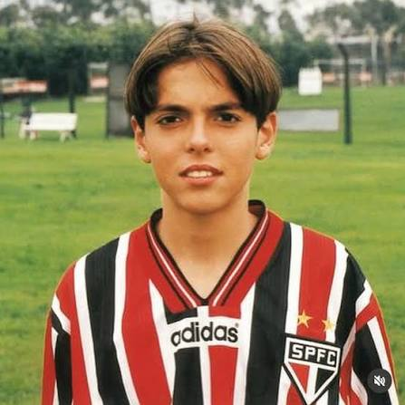

Kaká ingresó a las categorías inferiores del São Paulo a los 15 años. Desde sus primeros entrenamientos llamó la atención por su técnica, inteligencia y tranquilidad con el balón.
En el año 2000 sufrió un grave accidente en una piscina que estuvo cerca de terminar con su carrera. Tras meses de recuperación, regresó completamente recuperado y con una determinación aún mayor.
Debutó profesionalmente en 2001 y rápidamente se convirtió en una de las grandes revelaciones del fútbol brasileño, ayudando al club a conquistar el Torneo Río-São Paulo.
